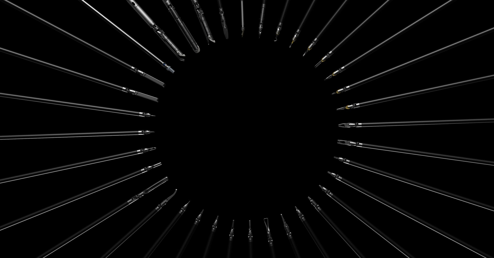

Intuitive Surgical
Background
Intuitive Surgical makes the da Vinci Surgical Robot. This robot enables surgical procedures to be performed with minimally invasive procedures, giving a doctor improved precision and control, and improving patient outcomes and recover time.
I worked there for 8 years, contributing to the Automation, Equipment & Test Team (AET) for instruments and accessories. During my tenure, I took on roles as both a software engineer and as a manager to the software engineering team. Much of my work is focused on manufacturing tools, and remains trade secrets, so I'll be discussing my work in broader terms, as they relate to publicly released products.

Individual Contributions
I was a key contributor to Intuitive's automation boom, driving towards higher quality standards or more lower cost medical instruments. I automated tasks that were repetitive, ergonomically challenging, and sometimes dangerous for operators to perform. I also took on tasks that improved product quality beyond the precision that human technicians of reliably capable of. This is particularly important in medical instruments, since this guarantees the products will perform safely and reliably.
I was never the fastest developer, but I thrived on tasks that were particularly difficult and open-ended. These were areas were I could find inventive solutions, exceed expectations, and create elegant, extensible, and generalizable solutions. There is a patent pending, and if/when it is released, I can added detailed examples.
I worked with the Instruments and accessories teams. From a technical standpoint, this meant focusing on control of specific robotic joints relevant to the instruments, as well as numerous robotics integration tasks. From a hardware manufacturing standpoint, this meant producing product of moderate complexity at mid to high volume (1-10 million units / year). My individual contributions were mostly to the following Da Vinci Xi lines:
- 8mm instrument base instrument production lines (all 24 of them). I was a key contributor/creator on all aspects of these lines.
- I helped improve key test fixtures for our most complex instrument lines, the Xi staplers (30/45/60, curved tip 30/45/60).
- Suction irrigator: I helped develop fixtures and test equipment for this line.
- 12mm and Stapler Seals (These are the highest volume parts we produced), introducing an interesting new set of challenges, centered around automation and very fast takt times. I helped select components, and design the software architecture to allow all the components to be smoothly integrated.
- Vessel Sealer/ SynchroSeal welding and weld analysis tools.
- Harmonic Ace line improvements and support.
- Global Labeling Management System: A data management initiative, inspired by legislation around the way product labeling are managed on single use and multi-use medical devices.
Leadership
Philosophy
A good leader protects and empowers their team. It's not about getting every ounce out of them. It's about giving them the opportunity and the vision to strive for their best. To do this, a good leader builds a fault-tolerant systems, in which people aren't afraid to make mistakes or ask questions. "There's nothing you can break that I can't fix." - Simon Sinek
Practical Experience
In a leadership capacity, I balanced competing schedules and priorities, allowing my team members to focus on development. I felt it was my role to isolate them from most of that noise, presenting realistic internal goals and priorities. These focused largely on daily production needs. However, the company was in a growth phase, and we also had plenty of opportunities for improvement to our processes and code base. I focused on:
- Architectural improvements to our code-base, to remove code duplication and dependencies on less stable tools.
- Process improvements: Moving from SVN to git, making code reviews more rigorous, and working towards continuous integration.
- Improvements in test coverage.
- Knowledge transfer: Standardization of how we documented complex systems, trained new team members, and kept current team members informed about relevant improvements to the code-base.